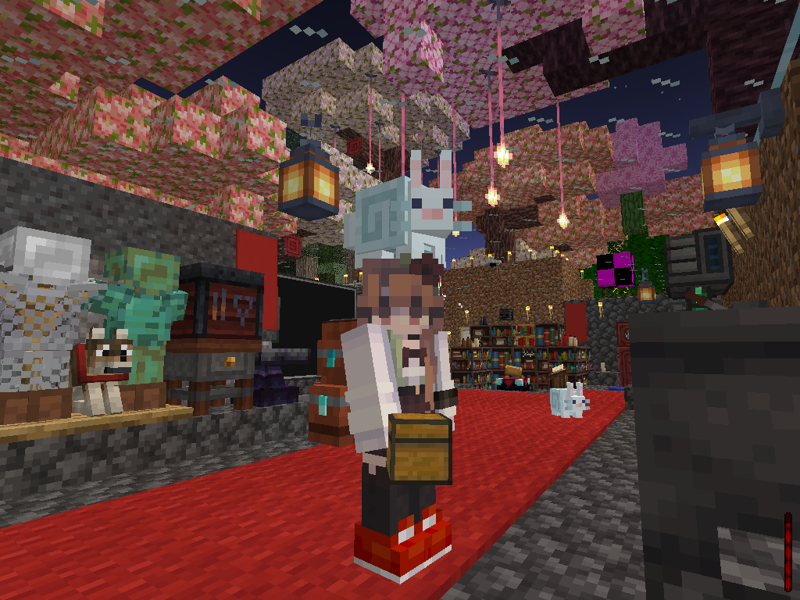
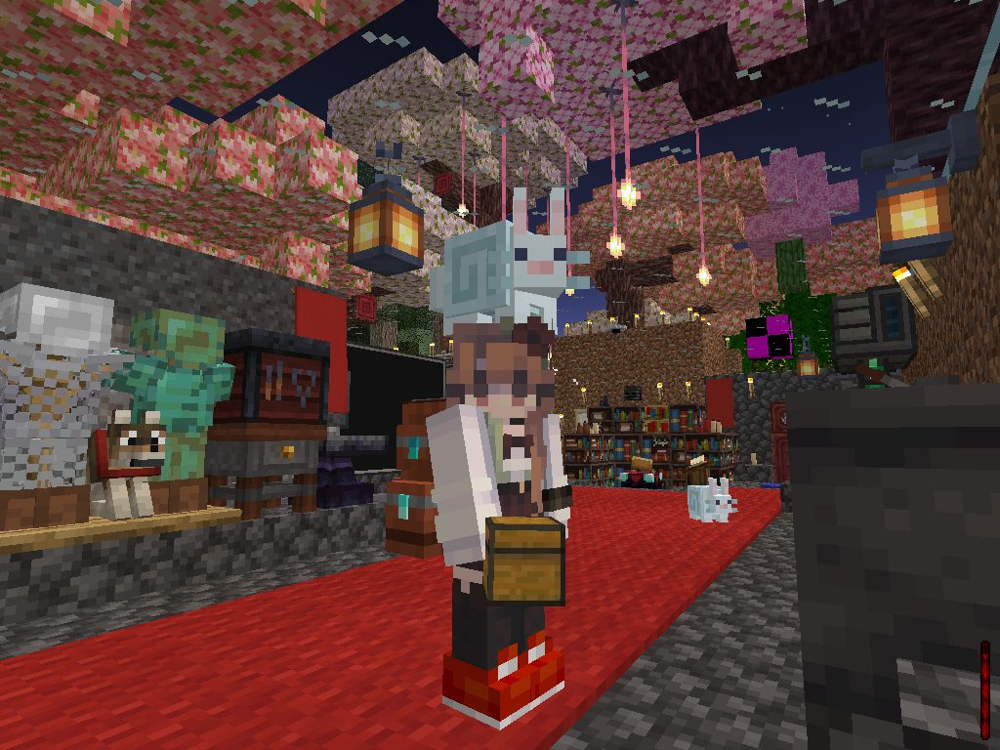
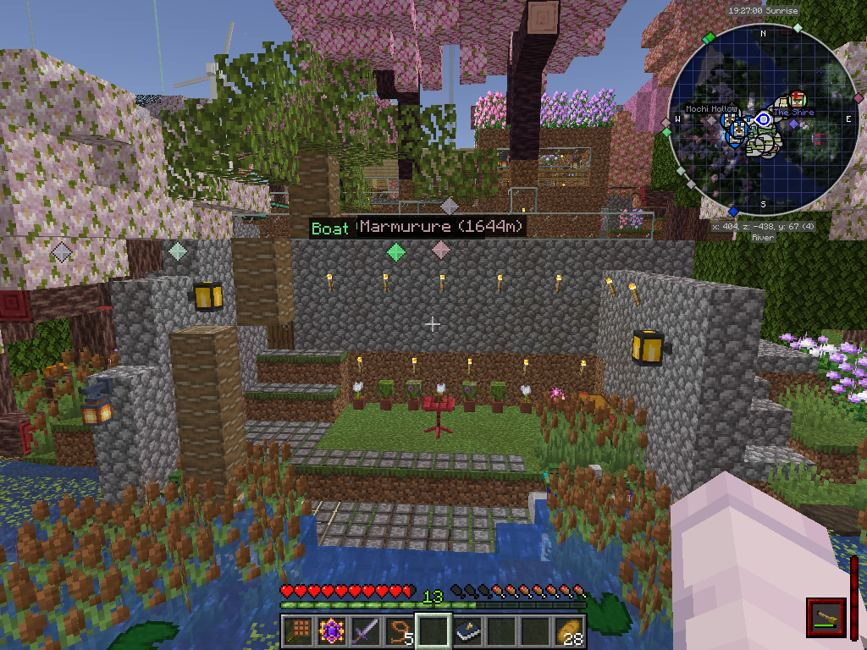
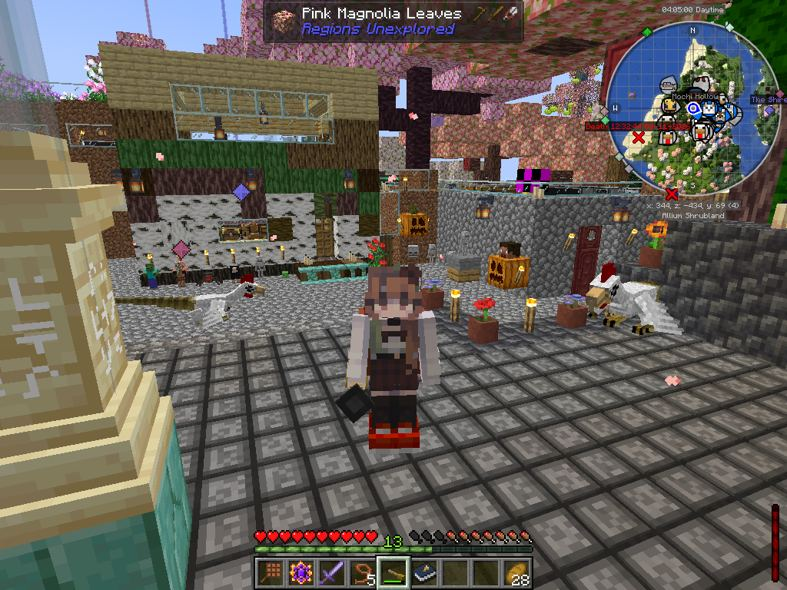
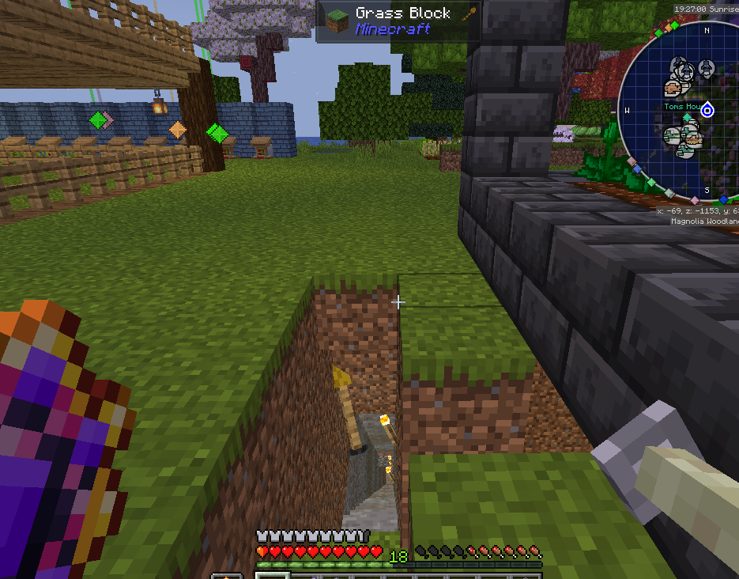

My first Minecraft home — an interactive 3D tour of the place I built, reconstructed from my actual All the Mods 10 schematic.
✧ VERSION 1 • ATM10

Original in-game screenshot · Visual reference for this reconstruction
Version 1 release: This interactive model is a close reconstruction of NONVERBALE’s original All the Mods 10 base, created from the saved schematic. Some textures, block geometry, glass, water, trophies, machines and other modded details are approximated or may render incorrectly. See the real in-game screenshots for the exact appearance.
About this 3D tour: The original ATM10 schematic supplies the block positions. The model uses a mixture of mod assets, compatible vanilla textures and some substitute shapes. It is an explorable representation of the build, not an exact Minecraft game render.

From the original ATM10 world · chosen cover screenshot

The waterfront, cattails & coffee-viewing terrace · Original in-game screenshot
01 / A place called home
The first base. All the memories.
An ambitious first home in All the Mods 10: flower-filled spaces, a workshop, a cozy living area, and just enough engineering to keep an entire modpack entertained.
Build periodJuly 29 – September 25, 2026
Game / modpackMinecraft Java · All the Mods 10
BiomeAllium ShrublandOh The Biomes We've Gone · Confirmed by the builder
EditionVersion 1 · Interactive reconstruction
Original serverInactive · ClosedPrivately hosted by someone else · Reopening unknown
◈ Preserved build · September 2026
This base was built on a server I did not own. That server is no longer active or open, and I don’t know whether it will ever reopen. My build is complete; this page preserves it through original screenshots, construction footage, collectibles, and a close-but-imperfect interactive 3D reconstruction.
☕ Waterfront Amenities
A cozy little spot out back, perfect for sipping coffee, enjoying the scenery, and minding my own business. Naturally, I went a little overboard with the cattails, lily pads, and an oddly specific marshland aesthetic. It was all done with the utmost consideration and hospitality, of course.
I hope they felt at home.
This is a close reconstruction from the real schematic, not a pixel-perfect copy of ATM10. The screenshots and construction footage are original in-game captures.
LOADING ORIGINAL SCHEMATIC◈ ORBIT VIEW
✥ Drag to rotate⊕ Scroll to zoom◇ Click a block to inspect
▧Building your world in 3D…Unpacking the original Minecraft schematic
Cleaned model reconstruction from the ATM10 schematic: original mod JSON geometry plus original and newer vanilla texture assets are used. Vanilla assets unavailable in the uploads are drawn with approximate textures, and custom engine renderers still need special handling. Toggle leaves for the full magnolia landscape or use fly mode to inspect the courtyard.
From the original Minecraft world
Actual in-game photographs
Compare the reconstruction above with real screenshots of the base and its surroundings. These are original in-game captures, not generated images.
48 original views

1 / 15 · Exterior & landscape
02 / The layout
Floor plans from the original schematic
Switch between three approximate height bands to examine where the built structures sit. These are architectural overviews, not fully labeled room blueprints.
Actual saved block coordinates
Stone and pavingWoodGlassMachineryFlowers
02 / Personal equipment
Gear & keepsakes
Notable items from the build, alongside the many things kept around the base.
Personal loadout
⚔
Diamond sword
Plaguebringer IV enchantment
◆
Void Core
Special keepsake / item
▣
Diamond backpack
Modded backpack with upgrades
Equipment is listed from the builder’s description; enchantments and backpack upgrades are not independently verified by the schematic.
The wider world
Places explored & unforgettable detours
More than a building project: these are the worlds and dimensions I remember visiting during my time in ATM10.
Player's exploration log
🐝 The Bumblezone🌲 Eternal Forest (recalled name)✨ Starlight Forest / Eternal Starlight🔥 The Nether⛏️ Mining Dimension☁️ The Aether🌿 The Undergarden🧊 Personal pocket dimension
These are visits recalled by the builder, not independently verified advancement completions. The names of the two forest destinations are retained as remembered.
🧹
The Broom That Became Architecture
Curiosity got the better of me one day, so I explored the cave system beneath someone else’s base while nobody was around. Getting down was easy. Getting back out? Not so much. There was a two-block rise I couldn't jump, and trying to fly my broom out just wedged me between the wall and the cave. I died, respawned, and returned to collect my things from the grave. Everything was recoverable—except the broom, which had apparently decided to become a permanent wall fixture. About two weeks later, the owner finally logged back in and rescued it for me. A completely routine exploration, obviously.

The actual broom incident spot. This is the screenshot where the broom effectively became one with the wall after I got stuck trying to fly back out of the cave entrance.
03 / The collection
The Trophy Wall
A proper record of the trophies actually present in the uploaded base schematic.
38 named trophies + 1 Lootr block
38Trophy Manager displays
30Distinct named trophy types
1Additional Lootr trophy
31 trophy types
🧟
Zombie Trophy
Minecraft×5
💀
Skeleton Trophy
Minecraft×3
💀
Summoned Skeleton Trophy
Irons Spellbooks×2
🦙
Trader Llama Trophy
Minecraft×2
🏆
Archer Norseman Trophy
Minecolonies×1
🦔
Armadillo Trophy
Minecraft×1
🐔
Chicken Trophy
Minecraft×1
🐄
Cow Trophy
Minecraft×1
💚
Creeper Trophy
Minecraft×1
🏆
Gelid Trophy
Variantsandventures×1
🧟
Husk Trophy
Minecraft×1
🔥
Magma Cube Trophy
Minecraft×1
🏆
Mimic Trophy
Aether×1
🕷️
Nightfall Spider Trophy
Eternal Starlight×1
🐽
Piglin Brute Trophy
Minecraft×1
🏹
Pillager Trophy
Minecraft×1
🐀
Ratlin Trophy
Eternal Starlight×1
🏆
Scintling Trophy
Undergarden×1
🏆
Sentry Trophy
Aether×1
🐑
Sheep Trophy
Minecraft×1
🏆
Shieldmaiden Trophy
Minecolonies×1
🐟
Silverfish Trophy
Minecraft×1
💀
Skeleton Druid Trophy
Twilightforest×1
🟩
Slime Trophy
Minecraft×1
🕷️
Spider Trophy
Minecraft×1
🏆
Stranghoul Trophy
Eternal Starlight×1
🏆
Stray Trophy
Minecraft×1
🏆
Tangled Skull Trophy
Eternal Starlight×1
💀
Wither Skeleton Trophy
Minecraft×1
🐽
Zombified Piglin Trophy
Minecraft×1
🏆
Lootr Trophy
Separate trophy block×1
Quantities come from the schematic’s saved trophy NBT. Each catalog entry uses a simple icon rather than an inaccurate trophy render. The Lootr block has no saved trophy name.
04 / Everyone who lived here
Residents & creatures
A census of animals and other living creatures saved in the schematic — from household cats and named dogs to modded visitors.
55 recorded residents
🐈
Charmer
Orange Minecraft cat
Named in the saved schematic
🐈
Kitten Little
Orange Minecraft cat
Featured by the builder; no matching name in the snapshot
🐈⬛
Mochi
Black-and-white tuxedo cat
Named in the saved schematic
🐺
Silly
Dog · Minecraft wolf
Named in the saved schematic
🐺
Annifer
Dog · Minecraft wolf
Saved as “Anifer” in the schematic
🐺
Goose
Dog · Minecraft wolf
Named in the saved schematic
Jack
Donkey
Named in the saved schematic
🐎
Menace
Horse
Named in the saved schematic
🐉
Fred
Cockatrice · chicken-dragon
Named Ice and Fire cockatrice
🐉
George
Cockatrice · chicken-dragon
Named Ice and Fire cockatrice
🐑
jeb_
Rainbow-color-changing sheep
Special sheep in the schematic
Icons represent saved creatures and builder-described pets. Counts are from the schematic snapshot; the portraits are intentionally simple.
Counts reflect entities saved in one schematic snapshot, not every animal that ever lived here. Icons are simplified markers, not exact in-game renders. Non-animal NPCs and dropped items are not included in this census.
05 / Video archive
The construction diary
Real August 1, 2026 Minecraft footage, captured while the base was still taking shape. The completed base walkthrough will never exist due to server shut down.
Original gameplay
Early build highlights
An archival look at the gardens, work-in-progress interiors, and landscaping. This is not the final September tour.
Silent highlight cut will eventually add Minecraft music track later???